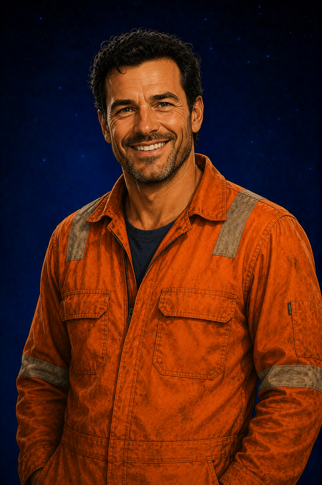

OCCUPATION
Offshore Oil Rig Worker
Works on offshore platforms in the North Sea, spending weeks at sea before returning home to his family.

PARENT
"Come on then... let's see where this clue takes us."
Jake and Jack's dad. A skilled offshore worker on the North Sea oil rigs, Mr Morrow spends weeks away from home before returning to the family he loves. Reliable, patient and quietly humorous, he treasures every moment he can spend with his wife and sons.
WHO IS MR MORROW?
Working on the oil rigs in the North Sea means Mr Morrow spends long periods away from home, often working demanding shifts in difficult conditions. Although the job is physically challenging, it allows him to provide for the family he cares about more than anything else.
Time away from home has taught him never to take family moments for granted. Holidays are particularly special, giving him the chance to enjoy simple pleasures with his wife, Jake and Jack, whether that's playing games, exploring new places or joining in with one of Jake's unexpected adventures.
Calm, dependable and always willing to lend a hand, Mr Morrow prefers solving problems quietly rather than making a fuss. Jake admires his practical approach, while Jack appreciates the confidence and reassurance his dad naturally provides.
AT A GLANCE
OCCUPATION
Works on offshore platforms in the North Sea, spending weeks at sea before returning home to his family.
PERSONALITY
Practical, patient and quietly humorous, he prefers actions to words and can usually be relied upon in a crisis.
KNOWN FOR
Whether it's entering a chess tournament, knocking coconuts off a stall or following a mysterious clue, he throws himself into every family adventure.
GREATEST STRENGTH
Through hard work, honesty and quiet determination, Mr Morrow teaches Jake and Jack that responsibility begins with the choices people make every day.
STORY APPEARANCES
Mr Morrow is tall and strongly built from years of physical offshore work. He has short dark brown hair beginning to show touches of grey, kind eyes and an easy smile that reflects his relaxed, approachable nature.
PEOPLE HE LOVES
"Dad says the North Sea can be completely calm one minute and throwing waves over the helipad the next."

SON
His younger son, whose imagination often turns quiet days into adventures.

SON
His elder son, whose thoughtful nature reminds him that quiet strength is just as important as physical strength.
WIFE
His wife and the person with whom he builds a loving family.
HOME IS WHERE HIS FAMILY IS
However far offshore his work takes him, Mr Morrow's greatest priority has always been his family. For Jake and Jack, knowing their dad is beside them makes every adventure feel just a little bit easier.
Meet the Rest of the Cast